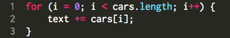
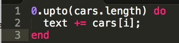
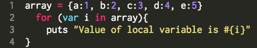
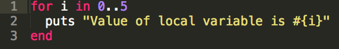
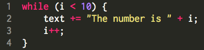
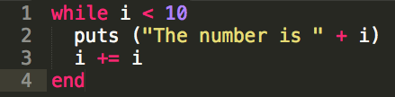
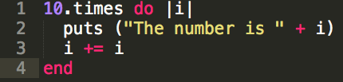
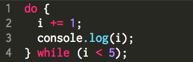
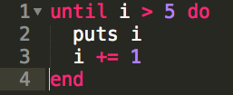

for loop: loops through a block of code a number of times JavaScript:  Ruby: 
for in loop: loops through the properties of an object
JavaScript:  Ruby: 
While Loop: loops through a block of code while a specified condition is true JavaScript:  Ruby:  
until loop (Ruby only): Executes code until a specific conditional is true. JavaScript:  Ruby: 
break: will terminate the most internal loop.